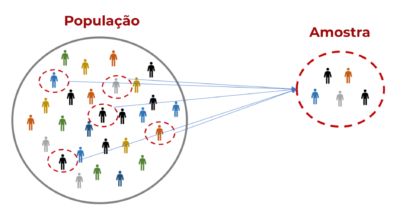
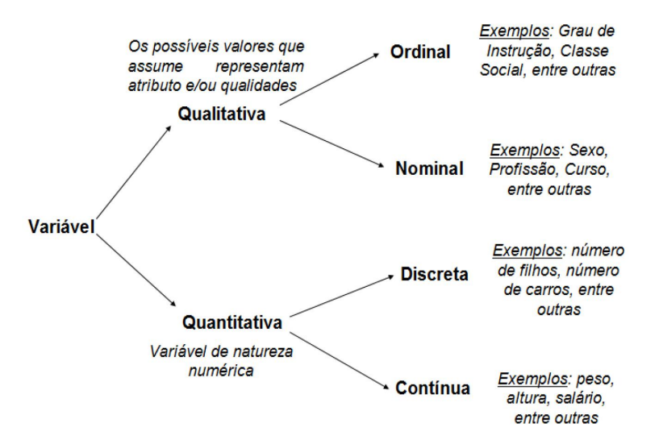

1 Estatística Descritiva
A Estatística Descritiva é a área da estatística que visa organizar, resumir e descrever um conjunto de dados. Neste capítulo, apresentaremos os conceitos fundamentais para a análise exploratória de dados, incluindo medidas de posição e dispersão, distribuições de frequências, representações gráficas e técnicas de amostragem.
Ao longo de todo o capítulo, utilizaremos um conjunto de dados fictício de uma pesquisa com 50 observações. Vamos carregá-lo:
O conjunto contém as variáveis: id, idade, renda, escolaridade, regiao, genero, satisfacao, horas_estudo e nota_final.
1.1 O que é Estatística
1.1.1 Definição
Algumas definições para a Estatística:
Estatística é a ciência que utiliza as teorias probabilísticas para explicar a frequência da ocorrência de eventos, tanto em estudos observacionais quanto em experimentos para modelar a aleatoriedade e a incerteza de forma a estimar ou possibilitar a previsão de fenômenos futuros, conforme o caso. (Saulo Henrique Weber, 2006)
A Estatística é a ciência que coleta, organiza, analisa, interpreta e apresenta dados. Ela fornece ferramentas e métodos para transformar informações brutas em conhecimento útil, permitindo a tomada de decisões embasadas em evidências. (D.S. Moore, et al., 1999)
Até que um fenômeno de qualquer ramo do conhecimento seja submetido a medidas e números, este não assumirá um status e seriedade na Ciência. — Popularmente atribuída a Francis Galton
Estatística é a arte de aprender a partir de dados. (Ross, 2010)
Sem dados você é uma pessoa qualquer com uma opinião. — William Edwards Deming
Estatística é a gramática da Ciência. — Karl Pearson
1.1.2 Breve História da Estatística
A palavra “Estatística” tem origem no latim status, que significa “estado”. Nos séculos XVII e XVIII, os governos europeus começaram a coletar dados sobre suas populações — nascimentos, mortes, impostos — para fins administrativos. Esse uso inicial deu à disciplina o seu nome.
Com o passar do tempo, a Estatística evoluiu de uma ferramenta puramente descritiva para uma ciência rigorosa. No século XIX, pensadores como Francis Galton e Karl Pearson desenvolveram conceitos como regressão e correlação. No século XX, Ronald Fisher revolucionou a área ao formalizar os testes de hipóteses e a análise de variância, lançando as bases da inferência estatística moderna.
Hoje, a Estatística está na base da ciência de dados, do aprendizado de máquina e de praticamente toda pesquisa científica quantitativa.
Algumas leituras recomendadas são O Andar do Bêbado (Leonard Mlodinow) e Uma Senhora Toma Chá (David Salsburg) para aprendizado sobre a evolução histórica da estatística e probabilidade e para desenvolver intuição sobre conceitos complexos.
1.1.3 Importância e Aplicações
A Estatística é fundamental para muitas áreas e aplicável em quase todas porque permite testar hipóteses, validar teorias e generalizar resultados a partir de dados — e hoje em dia se coletam dados de quase tudo. Algumas dessas áreas são administração do Estado, otimização de processos industriais e de engenharia, computação, ciências (saúde, biológicas, sociais, física).
Ela nos permite responder questões como:
- Qual tipo e quantidade de dados devo coletar?
- Como organizar e resumir estes dados?
- Como analisar os dados e fazer conclusões a partir deles?
- Como avaliar a força destas conclusões e avaliar sua incerteza?
- Como planejar um experimento que verifique a minha hipótese?
Algumas aplicações específicas são:
- Identificar mensagens indesejáveis em um e-mail (spam);
- Segmentação do comportamento de consumidores para propagandas direcionadas;
- Redução de fraudes em transações de cartão de crédito;
- Predição de eleições;
- Otimização do uso de energia em edifícios;
- Existe relação entre desemprego e procura por Uber?
- Os desembolsos do BNDES fizeram aumentar a taxa de investimento da economia brasileira?
- Como explicar a inflação de alimentos?
- O Banco Central brasileiro reage aos choques cambiais?
- Qual o efeito do aumento da volatilidade no mercado sobre a taxa de câmbio?
1.2 Divisão do Livro
Tradicionalmente se divide didaticamente a estatística nas seguintes partes (o que a ementa dessa disciplina faz e consequentemente este livro também):
- Estatística Descritiva: É a área da estatística que visa organizar, resumir e descrever um conjunto de dados.
- Teoria da Probabilidade: Base teórica da estatística, é um ramo da matemática que estuda fenômenos aleatórios, ou seja, eventos cujos resultados não são determinísticos, mas sim sujeitos a incertezas. Ela fornece uma estrutura formal para quantificar a incerteza e modelar situações onde o acaso está presente.
- Estatística Inferencial: Coleção de métodos e técnicas utilizados para estudar uma população baseado em amostras probabilísticas desta população. É uma ferramenta valiosa para tomar decisões e fazer previsões.
Também haverá seções em cada capítulo onde a aplicação dos conceitos citados será feita nos softwares estatísticos R, Python e aplicativos de planilhas (no caso o Google Sheets, mas o mesmo pode ser aplicado no LibreOffice Calc ou no clássico Excel).
1.3 Conceitos Básicos
1.3.1 População
População é o conjunto de todos os elementos com a característica de interesse, sobre a qual desejamos obter informações. A população pode ser finita ou infinita. Representamos por \(N\) o número de elementos da população.
Exemplos:
- Todos os pacientes com diabetes no Brasil em um determinado ano.
- Todas as árvores de uma floresta tropical.
- Todos os carros de um modelo específico em uma concessionária.
- Todos os acessos a um site em 24 horas.
1.3.2 Amostra
Amostra é um subconjunto retirado de uma população, obtido através de técnicas de amostragem. O número de elementos da amostra é representado por \(n\).
Exemplo: Em uma pesquisa eleitoral para saber o resultado das eleições para presidente do Brasil, qual a população de interesse? Qual seria a amostra?
Resposta: A população é constituída de todos os eleitores do Brasil. A amostra seria um subconjunto (ex.: \(n = 2000\) eleitores) da população.

1.3.3 Censo
Censo é o processo utilizado para levantar as características observáveis abordando todos os elementos de uma população. Um levantamento efetuado sobre toda uma população é denominado levantamento censitário ou simplesmente censo.
O exemplo mais conhecido no Brasil é o Censo Demográfico realizado pelo IBGE. O Censo de 2022 visitou todos os domicílios do país, coletando informações sobre população, habitação, educação, renda e outras características socioeconômicas. Mais informações em: https://www.ibge.gov.br/estatisticas/sociais/trabalho/22827-censo-demografico-2022.html
1.3.4 Parâmetros
Parâmetro é uma medida fixa (geralmente desconhecida) que descreve uma característica de uma população inteira. Como se refere a toda a população, seu valor não muda (a menos que a população seja alterada).
Exemplos: Média populacional (\(\mu\)), desvio padrão populacional (\(\sigma\)), proporção populacional (\(p\)).
1.3.5 Estatísticas
Estatística (no sentido de medida) é uma medida descritiva calculada a partir de uma amostra (um subconjunto de uma população). Como a amostra é apenas uma parte da população, a estatística pode variar de amostra para amostra (variabilidade amostral).
Exemplos: Média amostral (\(\bar{x}\)), desvio padrão amostral (\(s\)), proporção amostral (\(\hat{p}\)).
1.3.6 Variável
Variável é qualquer característica que varia de um elemento da população para outro. É a característica que está sendo analisada em cada elemento de uma população.
Exemplo: Na população “funcionários de uma determinada empresa”, podemos estudar as variáveis: número de dependentes, remuneração financeira, idade, sexo, local de residência, nível de escolaridade, estado civil, tempo de serviço na empresa, etc.
1.3.7 Conjuntos de Dados
Os dados podem ser estruturados de diversas maneiras em diversas extensões e é nosso dever como analista de dados garantir que eles sejam importados da melhor forma para trabalharmos em cima deles.
Para fins práticos trabalharemos com dados no formato de planilha, que é o mais simples e efetivo. Porém, é possível trabalhar com data warehouses, bancos de dados relacionais (uma forma estruturada para reduzir redundância de dados e relacionar várias tabelas), bancos de dados não-relacionais, entre outros.
Dados em formato de planilha utilizam apenas uma tabela onde as linhas representam os registros, instâncias ou elementos daquela amostra ou população e as colunas representam as variáveis. Nosso conjunto de dados de exemplo segue exatamente esse formato:
1.4 Classificação das Variáveis
As variáveis podem ser classificadas em dois grandes grupos: qualitativas (categóricas) e quantitativas (numéricas). Cada grupo possui subdivisões importantes:
- Variáveis Qualitativas (Categóricas):
- Nominal: Não possuem ordenação natural. Ex.: gênero, região, cor dos olhos.
- Ordinal: Possuem uma ordenação natural. Ex.: escolaridade (Fundamental < Médio < Superior), satisfação (Insatisfeito < Neutro < Satisfeito).
- Variáveis Quantitativas (Numéricas):
- Discreta: Assumem valores inteiros, geralmente resultantes de contagens. Ex.: número de filhos, número de defeitos.
- Contínua: Assumem qualquer valor dentro de um intervalo, geralmente resultantes de medições. Ex.: altura, peso, renda, temperatura.

No nosso conjunto de dados:
| Variável | Tipo | Subtipo |
|---|---|---|
id |
Quantitativa | Discreta (identificador) |
idade |
Quantitativa | Discreta |
renda |
Quantitativa | Contínua |
escolaridade |
Qualitativa | Ordinal |
regiao |
Qualitativa | Nominal |
genero |
Qualitativa | Nominal |
satisfacao |
Qualitativa | Ordinal |
horas_estudo |
Quantitativa | Contínua |
nota_final |
Quantitativa | Contínua |
- Classifique as seguintes variáveis: temperatura corporal, estado civil, número de irmãos, CEP, nota em uma prova (0 a 10), tipo sanguíneo.
- No conjunto de dados
pesquisa_exemplo.csv, identifique quais variáveis são qualitativas nominais, qualitativas ordinais, quantitativas discretas e quantitativas contínuas.
1.5 Distribuição de Frequências
A distribuição de frequências é uma forma de organizar e resumir dados, mostrando como os valores de uma variável estão distribuídos. Ela pode ser aplicada tanto para variáveis quantitativas (numéricas) quanto para variáveis qualitativas (categóricas).
1.5.1 Distribuição para Variáveis Qualitativas
A distribuição de frequências para variáveis qualitativas é feita contando a ocorrência de cada categoria.
Passos:
- Listar as categorias presentes na variável.
- Contar a frequência absoluta (\(f_i\)): número de vezes que cada categoria aparece.
- Calcular a frequência relativa (\(fr_i\)): proporção de cada categoria em relação ao total.
\[ fr_i = \frac{f_i}{n} \]
onde \(n\) é o número total de observações.
- Calcular a frequência relativa percentual: \(fr_i \times 100\%\).
Exemplo com R:
# Frequência absoluta da variável 'regiao'
freq_abs <- table(dados$regiao)
freq_abs
# Frequência relativa
freq_rel <- prop.table(freq_abs)
freq_rel
# Tabela completa de frequências
tabela_freq <- data.frame(
Regiao = names(freq_abs),
Frequencia_Absoluta = as.numeric(freq_abs),
Frequencia_Relativa = round(as.numeric(freq_rel), 4),
Percentual = round(as.numeric(freq_rel) * 100, 2)
)
tabela_freq- Construa a distribuição de frequências (absoluta e relativa) para a variável
generodo conjunto de dados. - Construa a distribuição de frequências para a variável
escolaridade. Qual nível de escolaridade é mais frequente?
1.5.2 Distribuição para Variáveis Quantitativas
A distribuição de frequências para variáveis quantitativas é feita agrupando os dados em intervalos de classe ou listando cada valor individualmente.
Passos para construir a distribuição:
Definir os intervalos de classe (para dados contínuos):
- Divida os dados em intervalos (ex.: 0–10, 10–20, 20–30).
- Cada intervalo é chamado de classe.
- O tamanho do intervalo é chamado de amplitude de classe (\(h\)).
Contar a frequência: quantos valores estão em cada intervalo (frequência absoluta).
Calcular frequências relativas e acumuladas:
- Frequência relativa (\(fr_i\)): proporção de valores em cada classe em relação ao total.
- Frequência acumulada (\(F_i\)): soma das frequências até uma determinada classe.
Formas de definir o número de classes (\(k\)):
- Regra de Sturges: \(k = 1 + 3{,}322 \cdot \log_{10}(n)\)
- Regra da raiz quadrada: \(k = \sqrt{n}\)
A amplitude de cada classe é então:
\[ h = \frac{x_{\max} - x_{\min}}{k} \]
Exemplo com R:
# Número de classes pela Regra de Sturges
n <- nrow(dados)
k <- ceiling(1 + 3.322 * log10(n))
k
# Amplitude da classe para a variável 'idade'
amplitude <- (max(dados$idade) - min(dados$idade)) / k
amplitude
# Construir a distribuição de frequências
breaks <- seq(min(dados$idade), max(dados$idade) + amplitude, by = ceiling(amplitude))
classes <- cut(dados$idade, breaks = breaks, right = FALSE)
freq_abs <- table(classes)
# Tabela completa
tabela <- data.frame(
Classe = names(freq_abs),
fi = as.numeric(freq_abs),
fri = round(as.numeric(freq_abs) / n, 4),
Fi = cumsum(as.numeric(freq_abs)),
Fri = round(cumsum(as.numeric(freq_abs)) / n, 4)
)
names(tabela) <- c("Classe", "f_i", "fr_i", "F_i", "Fr_i")
tabela- Construa a distribuição de frequências para a variável
rendautilizando a Regra de Sturges. Interprete os resultados. - Construa a distribuição de frequências para a variável
nota_finalcom 5 classes de igual amplitude. Qual classe concentra mais observações? - Calcule a frequência acumulada relativa para a variável
horas_estudo. Qual porcentagem dos indivíduos estuda até 10 horas?
1.6 Medidas de Posição e Dispersão
As medidas de posição (ou tendência central) indicam em torno de qual valor os dados se concentram. As medidas de dispersão indicam o quão espalhados estão os dados em relação ao centro. Juntas, elas fornecem um resumo numérico essencial de qualquer conjunto de dados.
1.6.1 Média
A média aritmética é a soma de todos os valores observados dividida pelo número de observações. É a medida de tendência central mais utilizada.
Média populacional (parâmetro):
\[ \mu = \frac{\sum_{i=1}^{N} x_i}{N} = \frac{x_1 + x_2 + \cdots + x_N}{N} \]
Média amostral (estatística):
\[ \bar{x} = \frac{\sum_{i=1}^{n} x_i}{n} = \frac{x_1 + x_2 + \cdots + x_n}{n} \]
Propriedades da média:
- A soma dos desvios em relação à média é sempre zero: \(\sum_{i=1}^{n}(x_i - \bar{x}) = 0\).
- Se somarmos (ou subtrairmos) uma constante \(c\) a todos os valores, a média fica acrescida (ou diminuída) de \(c\): \(\overline{x + c} = \bar{x} + c\).
- Se multiplicarmos todos os valores por uma constante \(c\), a média fica multiplicada por \(c\): \(\overline{c \cdot x} = c \cdot \bar{x}\).
A média é sensível a valores extremos (outliers). Um único valor muito alto ou muito baixo pode distorcer significativamente a média. Por isso, é importante sempre analisá-la em conjunto com outras medidas.
Exemplo resolvido: Considere as notas de 8 alunos em uma prova: 5,0; 6,5; 7,0; 7,0; 7,5; 8,0; 8,5; 9,0.
\[ \bar{x} = \frac{5{,}0 + 6{,}5 + 7{,}0 + 7{,}0 + 7{,}5 + 8{,}0 + 8{,}5 + 9{,}0}{8} = \frac{58{,}5}{8} = 7{,}3125 \]
Aplicação em R:
- Calcule manualmente a média das seguintes observações: 12, 15, 18, 20, 25.
- Utilizando R, calcule a média de
rendae denota_finaldo conjunto de dados. Compare os valores e discuta o que cada um representa. - Se todos os funcionários de uma empresa receberem um aumento de R$ 500, o que acontece com a média salarial? Justifique usando as propriedades da média.
1.6.2 Mediana
A mediana (\(Md\)) é o valor que ocupa a posição central de um conjunto de dados ordenado. Ela divide o conjunto em duas partes iguais: 50% dos valores ficam abaixo e 50% ficam acima da mediana.
Cálculo:
- Ordene os dados em ordem crescente.
- Se \(n\) é ímpar: \(Md = x_{\left(\frac{n+1}{2}\right)}\)
- Se \(n\) é par: \(Md = \frac{x_{\left(\frac{n}{2}\right)} + x_{\left(\frac{n}{2}+1\right)}}{2}\)
A mediana é robusta a valores extremos, ou seja, não é afetada por outliers. Por isso, em distribuições assimétricas (como renda), a mediana costuma ser uma medida de tendência central mais representativa do que a média.
Exemplo resolvido (\(n\) ímpar): Dados ordenados: 3, 5, 7, 8, 12 (\(n = 5\)).
Posição central: \(\frac{5+1}{2} = 3\). Logo, \(Md = x_{(3)} = 7\).
Exemplo resolvido (\(n\) par): Dados ordenados: 3, 5, 7, 8, 12, 15 (\(n = 6\)).
Posições centrais: \(\frac{6}{2} = 3\) e \(\frac{6}{2} + 1 = 4\). Logo, \(Md = \frac{x_{(3)} + x_{(4)}}{2} = \frac{7 + 8}{2} = 7{,}5\).
Aplicação em R:
- Calcule a mediana dos conjuntos: (a) 4, 7, 9, 11, 15; (b) 3, 5, 8, 10, 12, 20.
- Uma empresa tem 5 funcionários com salários: R$ 2.000, R$ 2.500, R$ 3.000, R$ 3.500, R$ 50.000. Calcule a média e a mediana. Qual medida representa melhor o salário “típico”? Por quê?
- Usando R, compare a média e a mediana da variável
rendado conjunto de dados. O que a diferença entre elas sugere sobre a distribuição da renda?
1.6.3 Moda
A moda (\(Mo\)) é o valor que ocorre com maior frequência em um conjunto de dados. É a única medida de tendência central que pode ser usada com variáveis qualitativas.
Um conjunto de dados pode ser:
- Amodal: nenhum valor se repete (não há moda).
- Unimodal: possui uma única moda.
- Bimodal: possui duas modas.
- Multimodal: possui três ou mais modas.
Exemplo resolvido:
- Dados: 2, 3, 3, 5, 7, 7, 7, 8, 9 \(\Rightarrow\) \(Mo = 7\) (unimodal).
- Dados: 1, 2, 2, 3, 5, 5, 8 \(\Rightarrow\) \(Mo = 2\) e \(Mo = 5\) (bimodal).
- Dados: 1, 2, 3, 4, 5 \(\Rightarrow\) amodal.
Aplicação em R:
# R não possui função nativa para moda. Vamos criar uma:
calcular_moda <- function(x) {
tabela <- table(x)
moda <- names(tabela[tabela == max(tabela)])
return(moda)
}
# Moda da escolaridade (variável qualitativa)
calcular_moda(dados$escolaridade)
# Moda da região
calcular_moda(dados$regiao)
# Moda da satisfação
calcular_moda(dados$satisfacao)
# Para variáveis quantitativas, a moda é menos informativa,
# mas podemos verificar:
calcular_moda(dados$idade)- Determine a moda dos conjuntos: (a) 5, 3, 7, 5, 9, 5, 2; (b) 1, 2, 3, 4, 5, 6; (c) 10, 20, 20, 30, 30, 40.
- Utilizando R, determine a moda das variáveis
regiaoesatisfacaodo conjunto de dados. Interprete os resultados.
1.6.4 Desvio Padrão
O desvio padrão mede a dispersão dos dados em relação à média. Quanto maior o desvio padrão, mais espalhados estão os dados. Ele é expresso na mesma unidade dos dados originais, o que facilita a interpretação.
Desvio padrão populacional:
\[ \sigma = \sqrt{\frac{\sum_{i=1}^{N} (x_i - \mu)^2}{N}} \]
Desvio padrão amostral:
\[ s = \sqrt{\frac{\sum_{i=1}^{n} (x_i - \bar{x})^2}{n - 1}} \]
Note que no desvio padrão amostral dividimos por \(n - 1\) (e não por \(n\)). Isso é chamado de correção de Bessel e garante que \(s^2\) seja um estimador não viesado da variância populacional \(\sigma^2\). A ideia intuitiva é que, ao usar \(\bar{x}\) no lugar de \(\mu\), “perdemos” um grau de liberdade.
Exemplo resolvido: Dados: 4, 7, 8, 10, 11. Calcule o desvio padrão amostral.
Média: \(\bar{x} = \frac{4 + 7 + 8 + 10 + 11}{5} = \frac{40}{5} = 8\)
Desvios ao quadrado:
| \(x_i\) | \(x_i - \bar{x}\) | \((x_i - \bar{x})^2\) |
|---|---|---|
| 4 | \(-4\) | 16 |
| 7 | \(-1\) | 1 |
| 8 | \(0\) | 0 |
| 10 | \(2\) | 4 |
| 11 | \(3\) | 9 |
| Soma | 0 | 30 |
Variância amostral: \(s^2 = \frac{30}{5 - 1} = \frac{30}{4} = 7{,}5\)
Desvio padrão amostral: \(s = \sqrt{7{,}5} \approx 2{,}74\)
Aplicação em R:
- Calcule manualmente o desvio padrão amostral dos dados: 10, 12, 14, 16, 18.
- Dois conjuntos de dados têm a mesma média (\(\bar{x} = 50\)). O conjunto A tem \(s = 5\) e o conjunto B tem \(s = 15\). Qual dos dois apresenta dados mais homogêneos? Justifique.
- Usando R, calcule o desvio padrão de
rendaenota_final. Em qual variável os dados são mais dispersos em relação à média?
1.6.5 Variância
A variância é o quadrado do desvio padrão. Ela mede a dispersão dos dados em relação à média, mas é expressa em unidades ao quadrado, o que dificulta a interpretação direta.
Variância populacional:
\[ \sigma^2 = \frac{\sum_{i=1}^{N} (x_i - \mu)^2}{N} \]
Variância amostral:
\[ s^2 = \frac{\sum_{i=1}^{n} (x_i - \bar{x})^2}{n - 1} \]
Propriedades da variância:
- A variância é sempre não negativa: \(s^2 \geq 0\).
- Se \(s^2 = 0\), todos os valores são iguais.
- Se adicionarmos uma constante \(c\) a todos os valores, a variância não se altera: \(\text{Var}(x + c) = \text{Var}(x)\).
- Se multiplicarmos todos os valores por uma constante \(c\), a variância fica multiplicada por \(c^2\): \(\text{Var}(c \cdot x) = c^2 \cdot \text{Var}(x)\).
Coeficiente de Variação (CV):
Para comparar a dispersão de variáveis com unidades ou magnitudes diferentes, utiliza-se o coeficiente de variação:
\[ CV = \frac{s}{\bar{x}} \times 100\% \]
- \(CV < 15\%\): baixa dispersão (dados homogêneos).
- \(15\% \leq CV \leq 30\%\): dispersão média.
- \(CV > 30\%\): alta dispersão (dados heterogêneos).
Aplicação em R:
# Variância amostral
var(dados$idade)
var(dados$renda)
# Verificação: variância = desvio padrão ao quadrado
sd(dados$idade)^2 # deve ser igual a var(dados$idade)
# Coeficiente de variação
cv_idade <- sd(dados$idade) / mean(dados$idade) * 100
cv_renda <- sd(dados$renda) / mean(dados$renda) * 100
cv_nota <- sd(dados$nota_final) / mean(dados$nota_final) * 100
cat("CV da idade:", round(cv_idade, 2), "%\n")
cat("CV da renda:", round(cv_renda, 2), "%\n")
cat("CV da nota final:", round(cv_nota, 2), "%\n")- A variância amostral de um conjunto de dados é \(s^2 = 16\). Qual é o desvio padrão?
- Se multiplicarmos todos os salários de uma empresa por 1,10 (aumento de 10%), o que acontece com a variância e com o desvio padrão? Justifique usando as propriedades.
- Usando R, calcule o coeficiente de variação das variáveis
idade,rendaenota_final. Qual variável apresenta maior dispersão relativa?
1.6.6 Assimetria
A assimetria (ou skewness) mede o grau de desvio da simetria de uma distribuição em relação à média. Ela indica se os dados estão concentrados mais à esquerda ou à direita da distribuição.
Coeficiente de Assimetria de Pearson:
Uma aproximação simples é dada pelo primeiro coeficiente de Pearson:
\[ A_P = \frac{\bar{x} - Mo}{s} \]
Existe também o segundo coeficiente de Pearson, que utiliza a mediana:
\[ A_P = \frac{3(\bar{x} - Md)}{s} \]
Coeficiente de Assimetria (momento de terceira ordem):
\[ g_1 = \frac{\frac{1}{n}\sum_{i=1}^{n}(x_i - \bar{x})^3}{s^3} \]
Interpretação:
- \(g_1 = 0\): distribuição simétrica. A média, a mediana e a moda coincidem.
- \(g_1 > 0\): distribuição assimétrica positiva (à direita). A cauda direita é mais longa. Neste caso: \(Mo < Md < \bar{x}\).
- \(g_1 < 0\): distribuição assimétrica negativa (à esquerda). A cauda esquerda é mais longa. Neste caso: \(\bar{x} < Md < Mo\).
A distribuição de renda em um país é um exemplo clássico de assimetria positiva: a maioria das pessoas ganha relativamente pouco, mas poucas pessoas ganham muito, “puxando” a cauda para a direita.
Aplicação em R:
# Instale o pacote 'e1071' se necessário: install.packages("e1071")
library(e1071)
# Assimetria da idade
skewness(dados$idade)
# Assimetria da renda
skewness(dados$renda)
# Assimetria da nota final
skewness(dados$nota_final)
# Interpretação visual: comparar média e mediana
cat("Renda - Média:", mean(dados$renda), "Mediana:", median(dados$renda), "\n")
cat("Se média > mediana, a distribuição tende a ser assimétrica positiva.\n")- Em uma distribuição, a média é 45, a mediana é 42 e o desvio padrão é 6. Calcule o segundo coeficiente de assimetria de Pearson e classifique a distribuição.
- Usando R, calcule a assimetria das variáveis
rendaenota_final. Classifique cada distribuição como simétrica, assimétrica positiva ou assimétrica negativa.
1.6.7 Curtose
A curtose (ou kurtosis) mede o grau de achatamento de uma distribuição em relação à distribuição normal. Ela indica se os dados estão mais ou menos concentrados em torno da média.
Coeficiente de Curtose (momento de quarta ordem):
\[ g_2 = \frac{\frac{1}{n}\sum_{i=1}^{n}(x_i - \bar{x})^4}{s^4} \]
É comum utilizar o excesso de curtose (\(g_2 - 3\)), de modo que a distribuição normal tenha excesso de curtose igual a zero.
Classificação:
- Mesocúrtica (\(g_2 \approx 3\) ou excesso \(\approx 0\)): achatamento semelhante ao da distribuição normal.
- Leptocúrtica (\(g_2 > 3\) ou excesso \(> 0\)): distribuição mais “pontiaguda” do que a normal, com caudas mais pesadas. Maior concentração de dados em torno da média, mas com mais valores extremos.
- Platicúrtica (\(g_2 < 3\) ou excesso \(< 0\)): distribuição mais “achatada” do que a normal, com caudas mais leves. Menor concentração de dados em torno da média.
Em finanças, distribuições leptocúrticas são especialmente importantes: elas indicam que eventos extremos (grandes lucros ou perdas) são mais prováveis do que o previsto por uma distribuição normal.
Aplicação em R:
library(e1071)
# Curtose da idade (a função kurtosis do e1071 retorna o excesso de curtose)
kurtosis(dados$idade)
# Curtose da renda
kurtosis(dados$renda)
# Curtose da nota final
kurtosis(dados$nota_final)
# Interpretação
cat("Excesso de curtose > 0: leptocúrtica (caudas pesadas)\n")
cat("Excesso de curtose ~ 0: mesocúrtica (semelhante à normal)\n")
cat("Excesso de curtose < 0: platicúrtica (caudas leves)\n")- Explique com suas palavras a diferença entre uma distribuição leptocúrtica e uma platicúrtica. Dê um exemplo prático de cada.
- Usando R, calcule a curtose das variáveis
idade,rendaenota_final. Classifique cada uma. - Por que a curtose é importante na área de finanças? Relacione com o conceito de risco.
1.7 Gráficos
A representação gráfica é uma das ferramentas mais poderosas da Estatística Descritiva. Um bom gráfico comunica informações de forma rápida, clara e visualmente atraente. Nesta seção, apresentaremos os principais tipos de gráficos para variáveis qualitativas e quantitativas utilizando o pacote ggplot2 do R.
1.7.1 Gráficos para Variáveis Qualitativas
1.7.1.1 Gráfico de Barras
O gráfico de barras é utilizado para representar a frequência (absoluta ou relativa) de cada categoria de uma variável qualitativa. As barras são dispostas horizontalmente.
1.7.1.2 Gráfico de Colunas
O gráfico de colunas é semelhante ao de barras, mas com as barras dispostas verticalmente. É o formato mais comum.
1.7.1.3 Gráfico de Setores (Pizza)
O gráfico de setores (ou gráfico de pizza) representa as proporções de cada categoria como fatias de um círculo. Deve ser usado com cautela — é indicado apenas quando há poucas categorias e deseja-se enfatizar proporções.
# Preparar os dados
freq_genero <- as.data.frame(table(dados$genero))
names(freq_genero) <- c("Genero", "Frequencia")
ggplot(freq_genero, aes(x = "", y = Frequencia, fill = Genero)) +
geom_bar(stat = "identity", width = 1) +
coord_polar("y") +
labs(
title = "Distribuição por Gênero",
fill = "Gênero"
) +
theme_void() +
scale_fill_manual(values = c("#448EE3", "#2D4188"))Gráficos de pizza são muito criticados na comunidade de visualização de dados porque o olho humano tem dificuldade em comparar ângulos e áreas. Sempre que possível, prefira gráficos de barras ou colunas.
1.7.1.4 Gráfico de Linhas (para séries temporais ou ordinais)
Embora seja mais comum em séries temporais, o gráfico de linhas também pode ser usado para mostrar tendências em variáveis ordinais.
# Frequência de satisfação (variável ordinal)
freq_satisf <- as.data.frame(table(dados$satisfacao))
names(freq_satisf) <- c("Satisfacao", "Frequencia")
# Ordenar os níveis
freq_satisf$Satisfacao <- factor(
freq_satisf$Satisfacao,
levels = c("Insatisfeito", "Neutro", "Satisfeito", "Muito Satisfeito")
)
ggplot(freq_satisf, aes(x = Satisfacao, y = Frequencia, group = 1)) +
geom_line(color = "#448EE3", linewidth = 1) +
geom_point(color = "#2D4188", size = 3) +
labs(
title = "Frequência por Nível de Satisfação",
x = "Satisfação",
y = "Frequência"
) +
theme_minimal()- Crie um gráfico de colunas para a variável
generoutilizando oggplot2. - Crie um gráfico de barras horizontais para a variável
regiaoe ordene as barras da mais frequente para a menos frequente. (Dica: usereorder().) - Explique por que o gráfico de setores não é recomendado quando há muitas categorias.
1.7.2 Gráficos para Variáveis Quantitativas
1.7.2.1 Histograma
O histograma é o gráfico mais utilizado para representar a distribuição de uma variável quantitativa contínua. Ele divide os dados em intervalos (classes) e mostra a frequência de observações em cada intervalo por meio de barras adjacentes (sem espaço entre elas).
# Histograma da renda com linha de densidade
ggplot(dados, aes(x = renda)) +
geom_histogram(aes(y = after_stat(density)), bins = 8,
fill = "#448EE3", color = "white", alpha = 0.7) +
geom_density(color = "#2D4188", linewidth = 1) +
labs(
title = "Distribuição da Renda",
x = "Renda (R$)",
y = "Densidade"
) +
theme_minimal()1.7.2.2 Polígono de Frequências
O polígono de frequências conecta os pontos médios das barras de um histograma com uma linha. É útil para comparar distribuições de diferentes grupos.
1.7.2.3 Boxplot (Diagrama de Caixa)
O boxplot é um gráfico que resume cinco estatísticas importantes de uma variável quantitativa: mínimo, primeiro quartil (\(Q_1\)), mediana (\(Q_2\)), terceiro quartil (\(Q_3\)) e máximo. Além disso, ele identifica visualmente possíveis outliers.
Os quartis dividem os dados ordenados em quatro partes iguais:
- \(Q_1\) (25%): 25% dos dados estão abaixo desse valor.
- \(Q_2\) (50%): é a mediana.
- \(Q_3\) (75%): 75% dos dados estão abaixo desse valor.
A amplitude interquartílica (IQR) é: \(IQR = Q_3 - Q_1\).
Valores são considerados outliers se estiverem abaixo de \(Q_1 - 1{,}5 \times IQR\) ou acima de \(Q_3 + 1{,}5 \times IQR\).
# Calcular os quartis e IQR manualmente
Q1 <- quantile(dados$renda, 0.25)
Q2 <- quantile(dados$renda, 0.50)
Q3 <- quantile(dados$renda, 0.75)
IQR_renda <- Q3 - Q1
cat("Q1:", Q1, "\n")
cat("Mediana (Q2):", Q2, "\n")
cat("Q3:", Q3, "\n")
cat("IQR:", IQR_renda, "\n")
cat("Limite inferior:", Q1 - 1.5 * IQR_renda, "\n")
cat("Limite superior:", Q3 + 1.5 * IQR_renda, "\n")1.7.2.4 Diagrama de Dispersão
O diagrama de dispersão (ou scatterplot) mostra a relação entre duas variáveis quantitativas. Cada ponto no gráfico representa uma observação, com a posição determinada pelos valores das duas variáveis.
# Com linha de tendência e cores por gênero
ggplot(dados, aes(x = horas_estudo, y = nota_final, color = genero)) +
geom_point(size = 2) +
geom_smooth(method = "lm", se = FALSE, linetype = "dashed") +
labs(
title = "Horas de Estudo vs. Nota Final por Gênero",
x = "Horas de Estudo",
y = "Nota Final",
color = "Gênero"
) +
theme_minimal()- Crie um histograma para a variável
horas_estudocom 6 classes. Descreva a forma da distribuição (simétrica, assimétrica, etc.). - Construa boxplots da variável
nota_finalseparados porgenero. Há diferenças visíveis entre os grupos? - Crie um diagrama de dispersão entre
rendaenota_final. Parece haver alguma relação entre as variáveis? Descreva o padrão observado.
1.8 Análise Bidimensional de Dados
Até agora analisamos variáveis isoladamente (análise univariada). Porém, muitas vezes queremos entender a relação entre duas variáveis. A análise bidimensional nos fornece ferramentas para isso.
1.8.1 Tabelas de Contingência
Uma tabela de contingência (ou tabela cruzada) mostra a distribuição conjunta de duas variáveis qualitativas. Cada célula da tabela contém a frequência de observações que pertencem simultaneamente a uma categoria de cada variável.
Exemplo com R:
# Tabela de contingência: escolaridade x satisfação
tab_contingencia <- table(dados$escolaridade, dados$satisfacao)
tab_contingencia
# Frequências relativas (proporção do total)
prop.table(tab_contingencia)
# Proporções por linha (dado a escolaridade, qual a distribuição de satisfação?)
round(prop.table(tab_contingencia, margin = 1) * 100, 1)
# Proporções por coluna (dado a satisfação, qual a distribuição de escolaridade?)
round(prop.table(tab_contingencia, margin = 2) * 100, 1)# Tabela de contingência: região x gênero
table(dados$regiao, dados$genero)
# Visualização gráfica: gráfico de barras empilhadas
ggplot(dados, aes(x = regiao, fill = genero)) +
geom_bar(position = "fill") +
labs(
title = "Proporção de Gênero por Região",
x = "Região",
y = "Proporção",
fill = "Gênero"
) +
scale_y_continuous(labels = scales::percent) +
theme_minimal()- Construa a tabela de contingência entre
generoesatisfacao. Qual combinação de categorias é mais frequente? - Calcule as proporções por linha da tabela acima. Existe diferença no nível de satisfação entre os gêneros?
1.8.2 Covariância e Correlação
1.8.2.1 Covariância
A covariância mede a direção da relação linear entre duas variáveis quantitativas. Ela indica se as variáveis tendem a aumentar juntas (covariância positiva) ou se uma tende a aumentar quando a outra diminui (covariância negativa).
Covariância populacional:
\[ \sigma_{xy} = \frac{\sum_{i=1}^{N}(x_i - \mu_x)(y_i - \mu_y)}{N} \]
Covariância amostral:
\[ s_{xy} = \frac{\sum_{i=1}^{n}(x_i - \bar{x})(y_i - \bar{y})}{n - 1} \]
Interpretação:
- \(s_{xy} > 0\): relação positiva (as variáveis crescem juntas).
- \(s_{xy} < 0\): relação negativa (uma cresce enquanto a outra diminui).
- \(s_{xy} = 0\): ausência de relação linear.
A covariância não é padronizada, ou seja, seu valor depende das unidades de medida das variáveis. Por isso, não é possível comparar covariâncias de diferentes pares de variáveis diretamente. Para resolver esse problema, utilizamos a correlação.
1.8.2.2 Correlação de Pearson
O coeficiente de correlação de Pearson (\(r\)) é uma medida padronizada da relação linear entre duas variáveis quantitativas. Ele varia entre \(-1\) e \(+1\).
\[ r = \frac{s_{xy}}{s_x \cdot s_y} = \frac{\sum_{i=1}^{n}(x_i - \bar{x})(y_i - \bar{y})}{\sqrt{\sum_{i=1}^{n}(x_i - \bar{x})^2 \cdot \sum_{i=1}^{n}(y_i - \bar{y})^2}} \]
Interpretação:
| Valor de \(r\) | Interpretação |
|---|---|
| \(r = 1\) | Correlação linear positiva perfeita |
| \(0{,}7 \leq r < 1\) | Correlação positiva forte |
| \(0{,}3 \leq r < 0{,}7\) | Correlação positiva moderada |
| \(0 < r < 0{,}3\) | Correlação positiva fraca |
| \(r = 0\) | Ausência de correlação linear |
| \(-0{,}3 < r < 0\) | Correlação negativa fraca |
| \(-0{,}7 < r \leq -0{,}3\) | Correlação negativa moderada |
| \(-1 < r \leq -0{,}7\) | Correlação negativa forte |
| \(r = -1\) | Correlação linear negativa perfeita |
Correlação não implica causalidade! O fato de duas variáveis estarem correlacionadas não significa que uma causa a outra. Pode haver variáveis de confusão ou a relação pode ser espúria.
Exemplo resolvido: Considere os dados:
| \(x\) | \(y\) |
|---|---|
| 2 | 4 |
| 4 | 5 |
| 6 | 7 |
| 8 | 10 |
| 10 | 13 |
\(\bar{x} = 6\), \(\bar{y} = 7{,}8\)
\(s_{xy} = \frac{(2-6)(4-7{,}8) + (4-6)(5-7{,}8) + (6-6)(7-7{,}8) + (8-6)(10-7{,}8) + (10-6)(13-7{,}8)}{4}\)
\(s_{xy} = \frac{15{,}2 + 5{,}6 + 0 + 4{,}4 + 20{,}8}{4} = \frac{46}{4} = 11{,}5\)
\(s_x = \sqrt{10} \approx 3{,}16\), \(s_y = \sqrt{11{,}7} \approx 3{,}42\)
\(r = \frac{11{,}5}{3{,}16 \times 3{,}42} \approx \frac{11{,}5}{10{,}81} \approx 0{,}99\)
Há uma correlação positiva muito forte entre \(x\) e \(y\).
Aplicação em R:
# Covariância entre horas de estudo e nota final
cov(dados$horas_estudo, dados$nota_final)
# Correlação de Pearson
cor(dados$horas_estudo, dados$nota_final)
# Correlação entre idade e renda
cor(dados$idade, dados$renda)
# Matriz de correlação para variáveis numéricas
vars_num <- dados[, c("idade", "renda", "horas_estudo", "nota_final")]
round(cor(vars_num), 3)- Calcule manualmente a covariância e a correlação de Pearson para os dados: \(x = (1, 3, 5, 7, 9)\), \(y = (10, 8, 6, 4, 2)\). Interprete o resultado.
- Usando R, calcule a correlação entre
horas_estudoenota_final. Interprete o resultado. Podemos afirmar que estudar mais causa melhores notas? Justifique. - Construa a matriz de correlação para as variáveis numéricas do conjunto de dados. Quais pares de variáveis apresentam a correlação mais forte?
1.9 Técnicas de Amostragem
Em muitas situações é impossível ou inviável realizar um censo. Por isso, recorremos à amostragem: o processo de selecionar um subconjunto (amostra) da população para estudo. A qualidade das conclusões estatísticas depende diretamente de como a amostra é selecionada.
1.9.1 Amostragem Probabilística vs. Não Probabilística
Na amostragem probabilística, todos os membros da população têm uma probabilidade conhecida e diferente de zero de serem selecionados. Isso permite calcular margens de erro e fazer inferências estatísticas válidas.
Na amostragem não probabilística, a seleção dos elementos não é aleatória. A escolha pode ser por conveniência, julgamento ou voluntariado. Embora seja mais fácil e barata, não permite generalizar os resultados com rigor estatístico.
Exemplos de amostragem não probabilística:
- Por conveniência: entrevistar as pessoas mais acessíveis (ex.: alunos de uma turma específica).
- Por julgamento: o pesquisador seleciona os elementos que julga mais representativos.
- Bola de neve: cada participante indica outros participantes (comum em populações de difícil acesso).
A seguir, apresentaremos os principais métodos de amostragem probabilística, que são os mais recomendados para pesquisas científicas.
1.9.2 Amostragem Aleatória Simples
Na Amostragem Aleatória Simples (AAS), cada elemento da população tem a mesma probabilidade de ser selecionado, e as seleções são independentes entre si.
Como fazer:
- Numere todos os \(N\) elementos da população.
- Utilize um gerador de números aleatórios para selecionar \(n\) elementos.
Vantagens: simplicidade, ausência de viés. Desvantagens: pode ser impraticável para populações muito grandes ou geograficamente dispersas; pode não representar bem subgrupos minoritários.
Exemplo em R:
1.9.3 Amostragem Sistemática
Na Amostragem Sistemática, seleciona-se um ponto de partida aleatório e, a partir dele, seleciona-se cada \(k\)-ésimo elemento da lista populacional.
Como fazer:
- Calcule o intervalo de amostragem: \(k = \frac{N}{n}\) (arredondando para o inteiro mais próximo).
- Sorteie um número aleatório \(r\) entre 1 e \(k\) (ponto de partida).
- Selecione os elementos nas posições \(r\), \(r + k\), \(r + 2k\), \(r + 3k\), …, até completar \(n\) elementos.
Exemplo: Em uma população de \(N = 50\) indivíduos, para uma amostra de \(n = 10\):
- \(k = 50 / 10 = 5\)
- Sorteia-se \(r = 3\)
- Selecionam-se os indivíduos: 3, 8, 13, 18, 23, 28, 33, 38, 43, 48.
Vantagens: fácil de aplicar, garante boa cobertura da lista. Desvantagens: pode gerar viés se a lista tiver algum padrão periódico que coincida com \(k\).
Exemplo em R:
# Amostragem sistemática de 10 elementos
N <- nrow(dados)
n_amostra <- 10
k <- floor(N / n_amostra)
set.seed(42)
inicio <- sample(1:k, 1)
indices <- seq(inicio, N, by = k)[1:n_amostra]
amostra_sist <- dados[indices, ]
cat("Intervalo k:", k, "\n")
cat("Ponto de partida:", inicio, "\n")
cat("Índices selecionados:", indices, "\n")
amostra_sist1.9.4 Amostragem Estratificada
Na Amostragem Estratificada, a população é dividida em subgrupos homogêneos chamados estratos (com base em alguma característica relevante), e uma amostra aleatória simples é retirada de cada estrato.
Como fazer:
- Divida a população em estratos mutuamente exclusivos (ex.: por região, faixa etária, gênero).
- De cada estrato, retire uma amostra aleatória simples.
- A alocação pode ser proporcional (cada estrato contribui com uma proporção igual à sua representação na população) ou uniforme (o mesmo número de elementos por estrato).
Exemplo: Se a população tem 60% de mulheres e 40% de homens e queremos uma amostra de \(n = 20\):
- Alocação proporcional: 12 mulheres e 8 homens.
- Alocação uniforme: 10 mulheres e 10 homens.
Vantagens: garante representatividade dos subgrupos, maior precisão do que AAS quando os estratos são homogêneos internamente. Desvantagens: requer conhecimento prévio sobre a população para definir os estratos.
Exemplo em R:
1.9.5 Amostragem por Conglomerados
Na Amostragem por Conglomerados (clusters), a população é dividida em grupos heterogêneos chamados conglomerados (geralmente definidos por critérios geográficos ou administrativos). Alguns conglomerados são selecionados aleatoriamente e todos os elementos dos conglomerados selecionados são pesquisados.
Como fazer:
- Divida a população em conglomerados (ex.: bairros, escolas, hospitais).
- Sorteie aleatoriamente alguns conglomerados.
- Pesquise todos os elementos dos conglomerados sorteados.
Exemplo: Para pesquisar estudantes de uma cidade:
- Conglomerados: as escolas da cidade.
- Sorteie aleatoriamente 5 escolas.
- Pesquise todos os alunos dessas 5 escolas.
Vantagens: reduz custos logísticos e de deslocamento. Desvantagens: maior erro amostral do que AAS e estratificada; depende da heterogeneidade interna dos conglomerados.
Diferença entre estratos e conglomerados:
- Estratos devem ser homogêneos internamente e heterogêneos entre si. Amostramos de todos os estratos.
- Conglomerados devem ser heterogêneos internamente (representativos da população) e homogêneos entre si. Amostramos apenas alguns conglomerados.
Exemplo em R:
# Amostragem por conglomerados: selecionar 2 regiões aleatoriamente
set.seed(42)
regioes_disponiveis <- unique(dados$regiao)
regioes_selecionadas <- sample(regioes_disponiveis, size = 2)
cat("Regiões selecionadas:", regioes_selecionadas, "\n")
# Pesquisar todos os elementos das regiões selecionadas
amostra_congl <- dados[dados$regiao %in% regioes_selecionadas, ]
amostra_congl
cat("\nTamanho da amostra:", nrow(amostra_congl), "\n")1.9.6 Resumo Comparativo dos Métodos
| Método | Procedimento | Vantagem | Desvantagem |
|---|---|---|---|
| Aleatória Simples | Seleção aleatória de \(n\) elementos | Simples, sem viés | Pode não representar subgrupos |
| Sistemática | Seleção a cada \(k\) elementos | Fácil aplicação | Risco de viés com padrões periódicos |
| Estratificada | Divisão em estratos + AAS por estrato | Garante representatividade | Requer informação prévia |
| Conglomerados | Seleção de grupos inteiros | Reduz custos | Maior erro amostral |
- Uma universidade quer pesquisar a satisfação dos alunos. Descreva como cada um dos quatro métodos de amostragem probabilística poderia ser aplicado nesse contexto.
- Um pesquisador quer estudar a opinião dos moradores de uma grande cidade sobre transporte público. Qual método de amostragem você recomendaria? Justifique.
- Usando R, implemente uma amostragem estratificada proporcional do conjunto de dados, utilizando
generocomo variável de estratificação, com \(n = 20\). Compare as proporções de gênero na amostra e na população.
1.10 Resumo do Capítulo
Neste capítulo, abordamos os fundamentos da Estatística Descritiva:
- Conceitos básicos: população, amostra, censo, parâmetros, estatísticas e variáveis.
- Classificação de variáveis: qualitativas (nominal e ordinal) e quantitativas (discreta e contínua).
- Distribuição de frequências: organização de dados em tabelas com frequências absolutas, relativas e acumuladas.
- Medidas de posição: média, mediana e moda — cada uma com suas vantagens e limitações.
- Medidas de dispersão: variância, desvio padrão e coeficiente de variação — fundamentais para entender o espalhamento dos dados.
- Medidas de forma: assimetria e curtose — descrevem a forma da distribuição.
- Representações gráficas: gráficos de barras, colunas, setores, histogramas, polígonos de frequências, boxplots e diagramas de dispersão.
- Análise bidimensional: tabelas de contingência, covariância e correlação de Pearson.
- Técnicas de amostragem: aleatória simples, sistemática, estratificada e por conglomerados.
Esses conceitos formam a base para todo o restante do curso. No próximo capítulo, estudaremos a Teoria da Probabilidade, que fornece o alicerce matemático para a Estatística Inferencial.